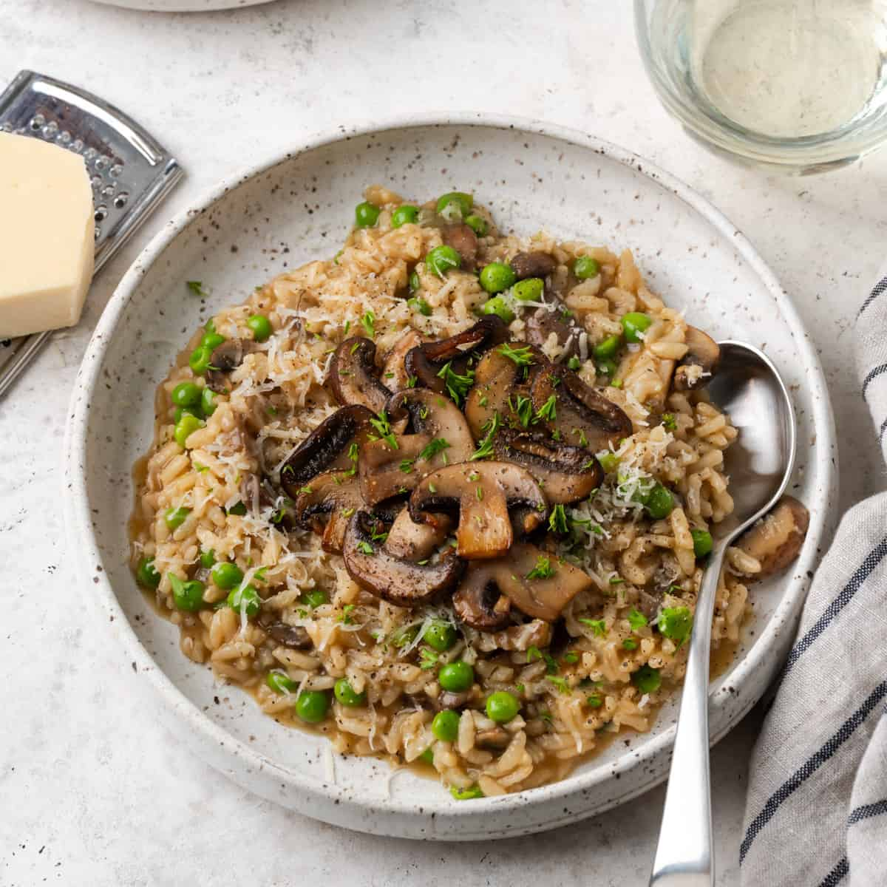

The Perfect Mushroom Risotto

Description:
This mushroom risotto recipe combines sautéed mushrooms with creamy Arborio rice for a rich and comforting dish. The rice is slowly cooked in warm broth, infused with garlic, onions, and white wine, then finished with butter, Parmesan cheese, and a touch of cream for extra richness. Fresh thyme adds earthy notes, while the mushrooms bring deep umami flavor. The result is a perfectly creamy, savory risotto that's perfect for a cozy meal.
Ingredients:
- 1 ½ cups Arborio rice
- 1 lb (450g) mixed mushrooms (cremini, shiitake, or porcini)
- 1 small onion, finely chopped
- 2 garlic cloves, minced
- 4 cups vegetable or chicken broth (warmed)
- ½ cup dry white wine
- ½ cup grated Parmesan cheese
- 2 tablespoons unsalted butter
- 2 tablespoons olive oil
- ¼ cup heavy cream (optional for extra creaminess)
- 1 tablespoon fresh thyme leaves (or 1 teaspoon dried thyme)
- Salt and pepper to taste
- Fresh parsley, for garnish (optional)
Instructions:
- Prepare the mushrooms:
-
Clean the mushrooms by wiping them with a damp cloth. Slice them evenly.
- Cook the mushrooms:
-
Heat 1 tablespoon of olive oil in a large pan over medium heat. Add the mushrooms and sauté until they're golden brown and softened, about 5-7 minutes. Season with salt and pepper, then remove from the pan and set aside.
- Start the risotto base:
In the same pan, add 1 tablespoon of olive oil and 1 tablespoon of butter. Once melted, add the chopped onion and cook until softened and translucent, about 3-4 minutes. Add the minced garlic and cook for 1 minute until fragrant.
- Toast the rice:
Add the Arborio rice to the pan and stir to coat it with the oil and butter. Cook for 2-3 minutes, stirring often, until the rice becomes slightly translucent around the edges.
- Deglaze with wine:
Pour in the white wine, stirring constantly, and cook until the wine has mostly evaporated, about 2 minutes.
- Add the broth gradually:
Begin adding the warm broth, one ladleful at a time, stirring frequently. Allow the liquid to absorb before adding more. Continue this process, adding broth and stirring, until the rice is tender but still has a slight bite in the center (al dente). This will take around 18-20 minutes.
- Finish with mushrooms and seasoning:
Once the risotto is cooked, stir in the sautéed mushrooms, fresh thyme, and the remaining tablespoon of butter. For extra creaminess, stir in the heavy cream if desired. Cook for another 1-2 minutes.
- Add cheese and season:
Remove the risotto from heat and stir in the grated Parmesan cheese. Taste and adjust seasoning with salt and pepper.
- Serve and garnish:
Spoon the risotto into bowls and garnish with fresh parsley or additional Parmesan, if desired. Serve immediately and enjoy!